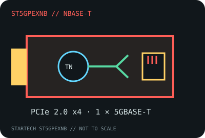

[ MODEL-SPECIFIC NETWORK HARDWARE RECORD ]
StarTech.com ST5GPEXNB 5GBASE-T PCIe Network Card
A single-port four-speed 5GbE/NBASE-T adapter. Specifications below identify the ST5GPEXNB, not the similarly named 2.5GbE or 10GbE StarTech cards.

IDENTIFICATION: Exact manufacturer SKU ST5GPEXNB. StarTech’s public product materials do not expose a distinct PCB revision number; capture the card’s product label and controller marking when documenting a specimen.
Exact SKU, interface and compatibility
| Exact model / SKU / revision | StarTech.com ST5GPEXNB; no hardware revision is specified in the referenced public product listing. |
|---|---|
| Controller | Tehuti TN4010 5GbE controller as identified for this card model; silicon stepping is not published on the public SKU page. |
| Bus, ports and connector | PCI Express 2.0 x4; one 8P8C/RJ-45 copper port; full-height and low-profile bracket options. |
| Per-port link rates | 5GBASE-T, 2.5GBASE-T, 1000BASE-T and 100BASE-TX auto-negotiation. The link rate is per port, not measured application throughput. |
| Driver and operating systems | Use the StarTech Tehuti TN4010 driver package. Its compatibility listing names Windows 7/8/8.1/10/11, Windows Server 2008 R2/2012/2016/2019, Linux 3.x and legacy macOS 10.12–10.14; confirm package availability and support for the exact host release. |
| Cabling and compatibility caveats | A 5GbE link requires a compatible peer and suitable Cat 5e-or-better cabling within channel limits. Use a slot that supplies four PCIe lanes electrically; physical x4 fit alone does not establish lane wiring or firmware support. |
| Variant warning | Do not substitute data for StarTech ST2GPEX, ST10GPEXNDPI or other products. Verify the card label reads ST5GPEXNB and record the installed driver version. |
Deployment notes
Negotiation can settle at a lower rate when the switch, cabling or far-end adapter lacks 5GBASE-T support. The NIC’s nominal link rating does not account for protocol overhead, CPU load, PCIe sharing or the performance of the remote endpoint.
Manufacturer datasheet and installation guide
- StarTech.com ST5GPEXNB datasheet (PDF)Manufacturer specification sheet for the exact adapter SKU.
- StarTech.com ST5GPEXNB Quick Start Guide (PDF)Manufacturer installation instructions for the one-port PCIe card.
- StarTech.com ST5GPEXNB product and driver supportManufacturer compatibility listing; check current OS and driver availability.
- IEEE 802.3 Ethernet standardStandards context only; it does not qualify a particular host or driver.